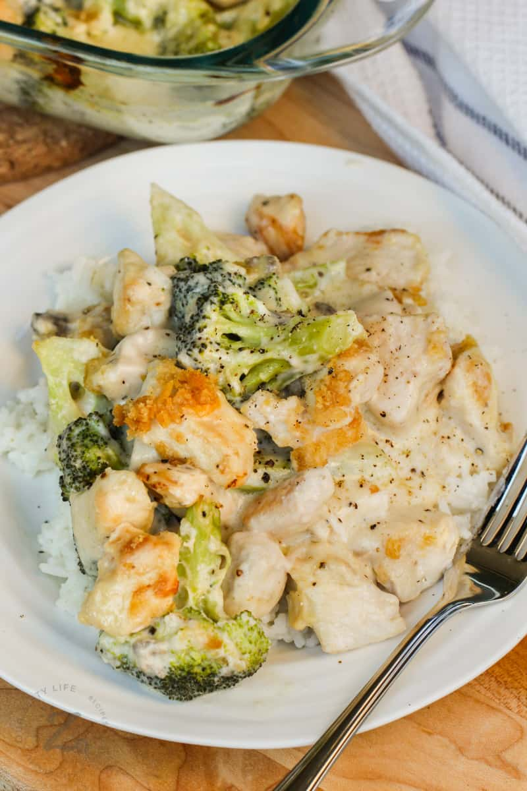

Chicken Divan - Gagne Family Recipe

Description
Chicken divan is a classic chicken casserole that layers leftover
chicken with cream soup, butter, breadcrumbs, and cheese.
This
recipe adds broccoli to the mix, lending beautiful color and
garden-fresh flavor to every bite.
Divan takes the name of the Divan Parisien Restaurant, where the
dish was created in the early twentieth century.
Ingredients
- 4 chicken breasts
- 4 cups of broccoli
- 1⁄4 block of cheddar cheese
- 1 can of cream of chicken
- half can of water
- 1⁄2 cube of chicken bouillon
- 1⁄4 cup of mayonnaise
- spare bread to tear and top the casserole
- salt
- pepper
Steps
- Preheat oven to 325°F
- Grate the entire amount of cheese
- Prepare a sauce over medium heat using cream of chicken, water, bouillon, and mayonnaise. Set aside
- Cut chicken into cubes
- Cook chicken with olive oil and salt and pepper to taste
- Boil water in a pot and cook broccoli until bright green
- Strain broccoli out of the water
- Begin assembling the dish in a large casserole by covering the bottom with broccoli
- Next goes a 1⁄2 cup of grated cheese, spread all over
- Add the chicken above that
- Cover it all with the sauce
- On top, add the torn bread and paint with melted butter
- Cover with foil and in the oven for 40 minutes
- Uncover and cook for an additional 10 minutes
- Let rest for a few minutes and enjoy!
Return to top page